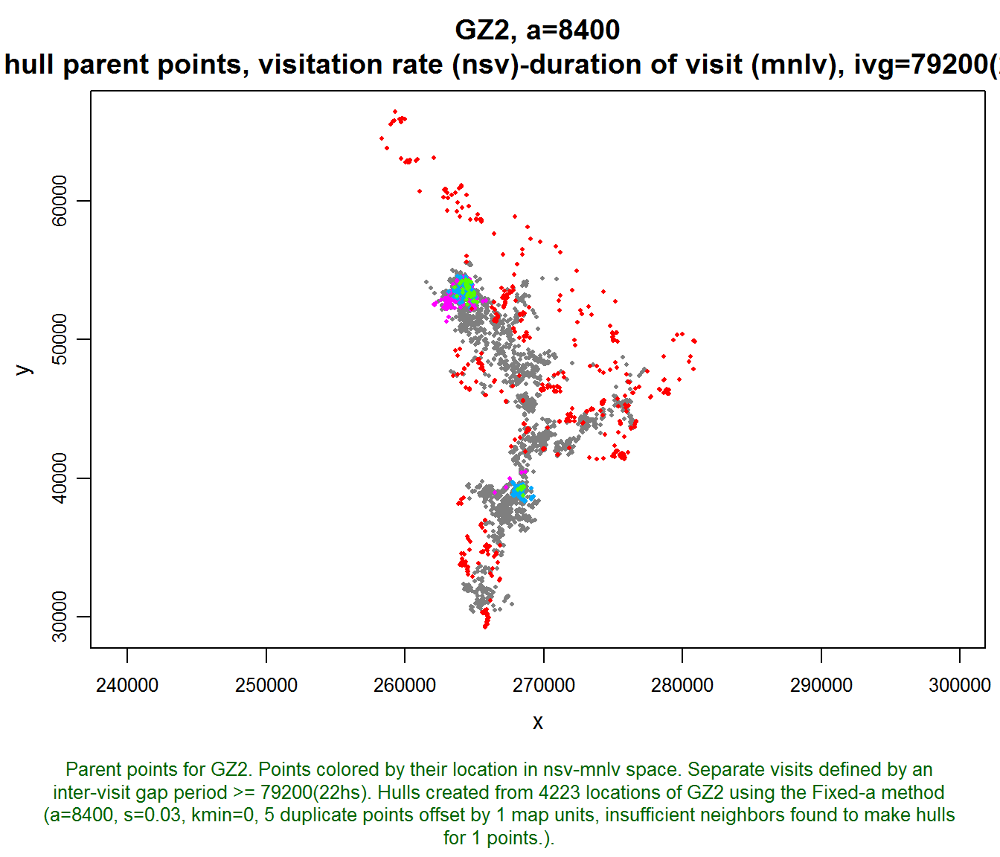

Manually ‘Digitizing’ Regions in Hull Scatterplot Space
Andy Lyons
June 2015
Summary
A useful feature of T-LoCoH is the ability to visualize - patterns between hull metrics, which may reflect different types of behavior. These patterns sometimes coincide with specific areas on the landscape - another clue that they reflect a behaviorial pattern. Notably, hull metrics for two dimensions of time-use (revisitation rate and duration of visit) have for many species revealed a “time use signature” for what appears to be territorial behavior (see figure below).
 Adapted from Figure 10 from Lyons et. al. 2013
Adapted from Figure 10 from Lyons et. al. 2013
This tip will illustrate how to manually digitize (i.e., draw with the mouse) discrete regions in scatterplot space. We can then:
- use the regions as a map legend
- export regions as a attribute field in a shapefile
- create subsets of data
Load Data
First, we load the tlocoh package and import a sample set of hulls.
require(tlocoh)## Loading required package: tlocoh
## Loading required package: sp
## T-LoCoH for R (version 1.34.00)
## URL: http://tlocoh.r-forge.r-project.org/
## Bug reports: tlocoh@gmail.comThe hullset we’ll use in this example is from a zebra named gz2, collected by Ilya Fischhoff in a study called Zebras of Laikipia-Samburu, Kenya. These data were obtained from MoveBank.org, and are subject to the MoveBank data sharing agreement.
mycon <- url("http://tlocoh.r-forge.r-project.org/gz2.n4223.s0.03.a8400.iso.lhs.01.RData")
load(mycon); close(mycon)
summary(gz2.lhs)## Summary of LoCoH-hullset object: gz2.lhs
## Created by: T-LoCoH 1.24
## [1] GZ2.pts4223.a8400.s0.03.kmin0
## id: GZ2
## pts: 4223
## dates: 2007-06-13 19:00:00 EAT to 2008-01-04 10:00:00 EAT
## movement: tau=3600 (1hs), vmax=0.924, d.bar=193.4
## hulls: 4222
## dups: 5 (offset by 1 map unit)
## mode: a=8400, kmin=0, s=0.03
## metrics: area, mnlv.79200, nep, nnn, nsv.79200, perim,
## scg.enc.mean, scg.enc.sd, scg.nn.mean, scg.nn.sd, tspan
## hmap: ivg (79200)
## isos: [1] iso.srt-nep.iso-q.h4222.i5
## other: -none-
## created: Sat Oct 25 03:46:14 2014plot(gz2.lhs, iso=TRUE, allpts=TRUE, cex.allpts=0.3)View Hulls in Time-Use Space
Let’s plot the hulls in hull metric scatterplot space. The two metrics (i.e., hull properties) we’ll look at are “number of separate visits”, which is a measure of revisitation, and “mean number of locations per visit” which is a measure of the duration of each visit.
lhs.plot.scatter(gz2.lhs, x="nsv", y="mnlv")
This looks interesting. There seems to be a spur in the middle of the time use space. We’ll look at the hulls that correspond to this spur, as well as the hulls with high and low revisitation.
Define Regions in Hull Metric Space
Let’s create that scatterplot again, but this time we’ll add the regions argument to the function, which tells R to prompt us to manually digitize (i.e., draw with the mouse) N regions, where N is the value passed for regions.
To draw each region, click on the plot window with the mouse where you want a node. You need to click at least twice (which will form a triangular region). When you’re ready to ‘close’ the polygon, hit escape (RStudio), or right-click and choose ‘stop’ (R GUI). Then, back at the console you’ll be prompted to type a label for the region (e.g., ‘low revisit’, or ‘searching’). Repeat the process for each region.
Note also below how we are saving the result of lhs.plot.scatter() to a variable called gz2_hsp. I selected this variable name to remind myself that it contains a Hull Scatter Plot object, which is an object that essentially stores the polygon boundaries for each region and their labels.
gz2_hsp <- lhs.plot.scatter(gz2.lhs, x="nsv", y="mnlv", regions=4)
TIP: If you want your regions to be drawn with specific colors, pass a vector of color values to regions.
Using Manually Defined Regions as a Map Legend
Let’s see where these regions in time-use space fall on the landscape. We’ll plot the locoh-hullset object, passing the following arguments:
- hpp=TRUE. Plot hull parent points
- hpp.classify=“hsp”. Classify (color) the hull parent points using a hull scatter plot object.
- hsp=gz2_hsp. Use the regions in the saved hsp object
plot(gz2.lhs, hpp=TRUE, hpp.classify="hsp", hsp=gz2_hsp, cex.hpp=0.4)
To actually display the scatterplot next to the map of hull parent points, we need to create a two-column plot layout using par(mfrow=c(1,2)), or perhaps the layout() function before calling the two plot functions (see example below). Fortunately however we don’t have to redraw the polygon regions each time we want to plot them for a legend, we can simply pass the saved hsp object back to the plotting function:
## Set up a two column plot
x <- matrix(0, nrow=3, ncol=5, byrow = TRUE); x[1:2, 1:2] <- 1; x[1:3, 3:5] <- 2
layout(x)
## Plot the hulls in time-use-space as a legend, then the hull parent points
lhs.plot.scatter(gz2.lhs, hsp=gz2_hsp, desc=0, title="GZ2 Hulls in Time Use Space", hsp.override=FALSE, lo.save = FALSE, lo.margins.set=FALSE)
plot(gz2.lhs, hpp=TRUE, hpp.classify="hsp", hsp=gz2_hsp, cex.hpp=0.4, lo.save = FALSE, lo.margins.set=FALSE, title.show=FALSE, desc=0)
Save Digitized Regions as Part of the Hullset
If we like the regions we drew, we can ‘save’ them as part of the locoh-hullset using the lhs.hsp.add() function. This isn’t required, but it simplifies things a bit because we no longer need to keep the hsp object in memory, and if we save the locoh-hullset to disk, the regions are saved with it.
gz2.lhs <- lhs.hsp.add(gz2.lhs, hsp=gz2_hsp)## - nsv.vs.mnlv.ivg.79200.4reg.01 added to GZ2.pts4223.a8400.s0.03.kmin0To see the hsp objects saved with a hullset, including the number of points within each region, we can add hsp.details=TRUE to the summary function:
summary(gz2.lhs, hsp.details=TRUE)## Summary of LoCoH-hullset object: gz2.lhs
## Created by: T-LoCoH 1.24
## [1] GZ2.pts4223.a8400.s0.03.kmin0
## id: GZ2
## pts: 4223
## dates: 2007-06-13 19:00:00 EAT to 2008-01-04 10:00:00 EAT
## movement: tau=3600 (1hs), vmax=0.924, d.bar=193.4
## hulls: 4222
## dups: 5 (offset by 1 map unit)
## mode: a=8400, kmin=0, s=0.03
## metrics: area, mnlv.79200, nep, nnn, nsv.79200, perim,
## scg.enc.mean, scg.enc.sd, scg.nn.mean, scg.nn.sd, tspan
## hmap: ivg (79200)
## isos: [1] iso.srt-nep.iso-q.h4222.i5
## hsp: [1] nsv.vs.mnlv.ivg.79200.4reg.01
## reg: low revisit (#FF0000FF,n=513); spur top
## (#55FF00FF,n=61); spur middle
## (#00AAFFFF,n=283); high revisit
## (#FF00FFFF,n=171)
## other: -none-
## created: Sat Oct 25 03:46:14 2014Note the index number [1] of our hull scatterplot object, displayed by the summary function. Once a hull scatterplot has been saved in a hullset, we can refer to it by its index number. In other words, instead of hsp=gz2_hsp, we could use hsp=1.
Export to a Shapefile
To analyze the hull parent points that fall within a specific region using a GIS package, we can export them to a shapefile with the lhs.exp.shp function. When you open the shapefile in a GIS package, you’ll see a column in the attribute table called hsp_reg which stores the region number for that hull (or hull parent point).
lhs.exp.shp(gz2.lhs, hpp=TRUE, hulls=TRUE, hsp=1)## Saving ./GZ2.s0.03.a8400.00.hpp.shp
## Saving ./GZ2.s0.03.a8400.00.hulls.shp
## Total time: 1.9 secs The attribute table (opened in QGIS) of a set of hulls exported as shapefile. Note the column for the region number of the hull parent point.
The attribute table (opened in QGIS) of a set of hulls exported as shapefile. Note the column for the region number of the hull parent point.
Using Saved Regions as a Filter to Create Plots of Subsets of Data
We can also use manually defined regions in hull metric space as a filter for plotting. We do this by i) creating a list of the hulls in each region with the lhs.filter.hsp() function, and ii) pass this list to the plotting function as the filter argument.
Below, we create scatterplots of the time of day and the date, to see if there are specific time periods that coincide with each of the four regions of interest in time-use space.
gz2_groups <- lhs.filter.hsp(gz2.lhs, hsp=1)
op <- par(mfrow=c(1,4))
lhs.plot.scatter(gz2.lhs, x="dt", y="dt.hour", filter=gz2_groups, lo.save = FALSE, lo.margins.set=FALSE, desc=0)
par(op)
Variant: Using a Color Wheel as Map Legend
Note, as an alternative to manually digitized regions, a hull metric scatterplot can also be symbolized with an overlaid color wheel by passing col=“spiral”. Other arguments you can use to customize the color wheel include center.method, sat.base, val.base, hue.offset, and bg.
## Set up a two column plot
x <- matrix(0, nrow=3, ncol=5, byrow = TRUE); x[1:2, 1:2] <- 1; x[1:3, 3:5] <- 2; layout(x)
gz2_colorwheel_hsp <- lhs.plot.scatter(gz2.lhs, x="nsv", y="mnlv", col="spiral", desc=0, title="GZ2 - time use metrics", bg="black", lo.save = FALSE, lo.bg.as.box=TRUE, lo.margins.set=FALSE)
plot(gz2.lhs, hpp=TRUE, hpp.classify="hsp", hsp=gz2_colorwheel_hsp, cex.hpp=0.6, lo.save = FALSE, desc=0, title="GZ2", lo.margins.set=FALSE, gmap="satellite")## Downloading common background image...Done
A color wheel map legend does a reasonably good job in visualizing points by their location in scatterplot space, but unlike manually digitized regions color values are not included when you export a hullset to shapefile, and you can’t use color values to subset the data.
T-LoCoH Tips. If you find this tip useful, or have feedback or another question on how to use T-LoCoH, please contact the package author. (c) 2015